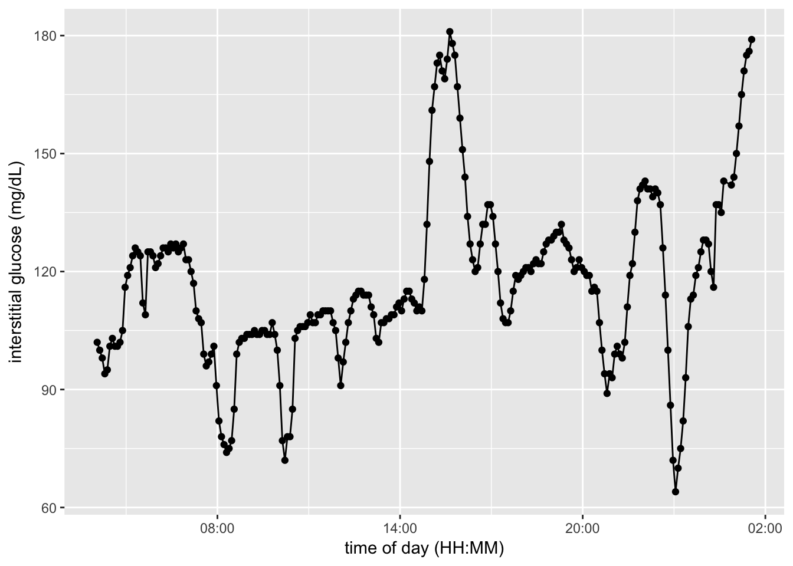
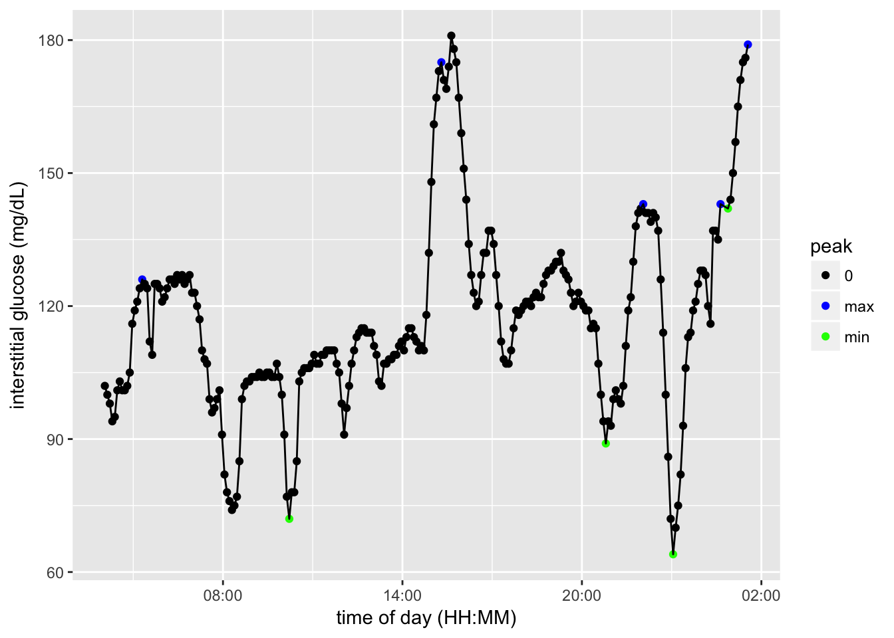
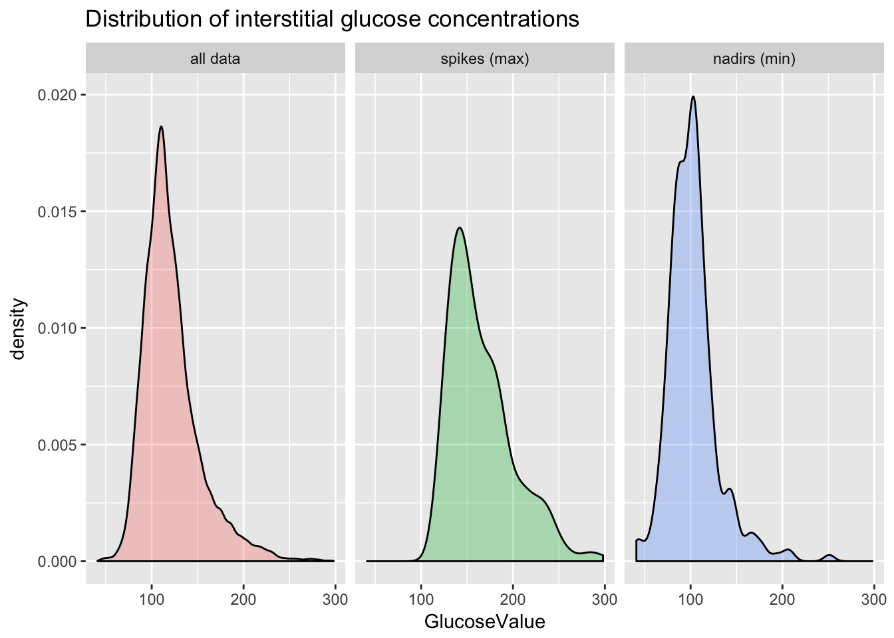

Last updated: 2017-09-11
Code version: c976020
library(lubridate) # work with times
library(leaps) # regsubset
library(kknn) # k nearest neighbor
library(gbm) # boosting
library(randomForest) # random forest
library(gridExtra); library(grid); library(gtable) # plot tables
library(ggplot2) # ggplot
library(scales) # easy plotting of dates
# load personal library
source(paste(personal.library.directory, "project_library.R", sep = "/"))# read in myfitnesspal data and recorded meal timing
food.logs = readMyFitnessPal(food.data.path, conversion.chart.path)
food.times <- read.delim(food.timing.file, stringsAsFactors = FALSE)
# read in glucose data
cgm.readings = readDexcomFile(glucose.file)head(cgm.readings)
GlucoseDisplayDate GlucoseDisplayTime GlucoseValue DisplayTime
1 3/29/15 11:53 100 2015-03-29 11:53:00
2 3/29/15 11:58 111 2015-03-29 11:58:00
3 3/29/15 12:03 113 2015-03-29 12:03:00
4 3/29/15 12:08 114 2015-03-29 12:08:00
5 3/29/15 12:13 116 2015-03-29 12:13:00
6 3/29/15 12:18 121 2015-03-29 12:18:00
example.date = "3/30/15"
example.CGM = cgm.readings[cgm.readings$GlucoseDisplayDate == example.date, ]
example.CGM$GlucoseDisplayTime <- as.POSIXct(strptime(example.CGM$GlucoseDisplayTime, format="%H:%M"))
ggplot(example.CGM) +
aes(x = GlucoseDisplayTime, y = GlucoseValue, group = GlucoseDisplayDate) +
geom_point() + geom_line() +
scale_x_datetime(breaks = date_breaks("6 hour"), labels = date_format("%H:%M")) +
labs(x = "time of day (HH:MM)", y = "interstitial glucose (mg/dL)")
current.table = food.logs[sample(1:nrow(food.logs), 10), ]
head(current.table)
description food_id entry_date category
1262 Whole Psyllium Husk 162715011 1/28/15 <NA>
1096 Roasted Grilled 156978150 3/14/15 Dinner
1275 Whole Psyllium Husk 212702230 10/27/15 Dinner
656 Fresh Squeezed Orange Juice 162966925 3/14/15 Breakfast
239 Center Cut Bacon 188896850 9/26/15 Breakfast
467 Coffee - Brewed from grounds 155741288 5/7/16 Breakfast
amount calories total_fat
1262 0.5 tablespoon (4g) 745 NA
1096 1 drumstick 541 15.00000
1275 0.5 tablespoon (4g) 992 NA
656 0.333 cup 752 0.17200
239 2 Slices 443 15.00000
467 1.8 serving(s) of 1 cup (8 fl oz) 768 0.08532
polyunsaturated_fat monounsaturated_fat trans_fat cholesterol sodium
1262 NA NA NA NA NA
1096 NA NA NA 157.5 172.500
1275 NA NA NA NA NA
656 0.034400 0.03100 0 0.0 0.860
239 0.000000 0.00000 0 45.0 900.000
467 0.004266 0.06399 0 0.0 8.532
potassium carbs fiber sugar protein vitamin_a vitamin_c calcium
1262 NA 10.00 10.00 NA NA NA NA NA
1096 NA NA NA NA 27.00000 3 0 3.0000
1275 NA 2.00 2.00 NA NA NA NA NA
656 172.000 8.94 1.72 7 1.00000 3 72 1.0000
239 0.000 0.00 0.00 0 15.00000 0 0 0.0000
467 209.034 0.00 0.00 0 0.51192 0 0 0.8532
iron Food.group food species additional_desc
1262 NA fiber psyllium plantago
1096 6.0000000 meat chicken drumstick
1275 NA fiber psyllium plantago
656 1.0000000 fruit orange
239 0.0000000 meat pig
467 0.2370002 drink coffee head(food.times[sample(1:nrow(food.times), 10), ])
Date TIME AM_PM Food Meal Minus.Meal Notes
31 4/3/15 17:20 pm wine dinner NA
149 4/27/15 19:30 pm dinner dinner NA unsure
1 3/29/15 9:15 am Banana breakfast NA
79 4/13/15 7:31 am breakfast breakfast NA
93 4/15/15 12:05 pm lunch lunch NA
77 4/12/15 14:55 pm mandarin orange NA
description
31 Wine-cabernet Savignon
149
1 Bananas - Raw
79
93
77 Clematinemin.peak = 120
min.peak.height = 30
cgm.readings = markGlucosePeaks(cgm.readings, min.peak.height, min.peak)
# count number of peaks
peak.type = c("max")
number.peaks = length(cgm.readings[which(cgm.readings$peak %in% peak.type),]$peak)
print(paste(number.peaks, "total glucose spikes annotated"))[1] "261 total glucose spikes annotated"head(cgm.readings)
GlucoseDisplayDate GlucoseDisplayTime GlucoseValue DisplayTime
1 3/29/15 11:53 100 2015-03-29 11:53:00
2 3/29/15 11:58 111 2015-03-29 11:58:00
3 3/29/15 12:03 113 2015-03-29 12:03:00
4 3/29/15 12:08 114 2015-03-29 12:08:00
5 3/29/15 12:13 116 2015-03-29 12:13:00
6 3/29/15 12:18 121 2015-03-29 12:18:00
peak timeChange glucoseChange
1 0 0 0
2 min 5 111
3 0 0 0
4 0 0 0
5 0 0 0
6 0 0 0
# get same example date
example.CGM = cgm.readings[cgm.readings$GlucoseDisplayDate == example.date, ]
example.CGM$GlucoseDisplayTime <- as.POSIXct(strptime(example.CGM$GlucoseDisplayTime, format="%H:%M"))
# show example of labeled cgm data
spike.colors = c("0" = "black", "max" = "red", "min" = "purple")
ggplot(example.CGM) +
aes(x = GlucoseDisplayTime, y = GlucoseValue, group = GlucoseDisplayDate) +
geom_point(aes(color = peak)) + geom_line() +
scale_x_datetime(breaks = date_breaks("6 hour"), labels = date_format("%H:%M")) +
scale_colour_manual(values = spike.colors) +
labs(x = "time of day (HH:MM)", y = "interstitial glucose (mg/dL)")
peakLabeller <- as_labeller(c(
"0" = "all data",
"max" = "spikes (max)",
"min" = "nadirs (min)"
))
ggplot(cgm.readings) +
aes(x = GlucoseValue, group = peak, fill = peak) +
geom_density(alpha = 0.3) +
ggtitle("Distribution of interstitial glucose concentrations") +
facet_wrap(~peak, labeller=peakLabeller) +
theme(legend.position="none")
# keep only dates with recorded meal times
dates.with.meal.times <- unique(food.times$Date)
cgm.readings <- cgm.readings[which(cgm.readings$GlucoseDisplayDate %in% dates.with.meal.times),]
# count number of peaks
peaks.remaining = length(cgm.readings[which(cgm.readings$peak %in% peak.type),]$peak)
print(paste(number.peaks - peaks.remaining, "peaks excluded because lacked any meal data"))[1] "60 peaks excluded because lacked any meal data"# remove travel from glucose data and food timing
cgm.readings = removeTravelDates(cgm.readings, travel.file, TZ.path)
food.times = food.times[food.times$Date %in% cgm.readings$GlucoseDisplayDate, ]
# print number of days removed from travel
peaks.post.travel = length(cgm.readings[which(cgm.readings$peak %in% peak.type),]$peak)
print(paste(peaks.remaining - peaks.post.travel, "peaks excluded because occured during travel"))[1] "80 peaks excluded because occured during travel"sessionInfo()R version 3.3.3 (2017-03-06)
Platform: x86_64-apple-darwin13.4.0 (64-bit)
Running under: OS X El Capitan 10.11.6
locale:
[1] en_US.UTF-8/en_US.UTF-8/en_US.UTF-8/C/en_US.UTF-8/en_US.UTF-8
attached base packages:
[1] grid parallel splines stats graphics grDevices utils
[8] datasets methods base
other attached packages:
[1] scales_0.4.1 ggplot2_2.2.1 gtable_0.2.0
[4] gridExtra_2.2.1 randomForest_4.6-12 gbm_2.1.3
[7] lattice_0.20-35 survival_2.41-3 kknn_1.3.1
[10] leaps_3.0 lubridate_1.6.0
loaded via a namespace (and not attached):
[1] igraph_1.0.1 Rcpp_0.12.10 knitr_1.17 magrittr_1.5
[5] munsell_0.4.3 colorspace_1.3-2 plyr_1.8.4 stringr_1.2.0
[9] tools_3.3.3 git2r_0.19.0 htmltools_0.3.5 lazyeval_0.2.0
[13] yaml_2.1.14 rprojroot_1.2 digest_0.6.12 tibble_1.3.0
[17] Matrix_1.2-8 evaluate_0.10.1 rmarkdown_1.6 labeling_0.3
[21] stringi_1.1.5 backports_1.0.5 This R Markdown site was created with workflowr